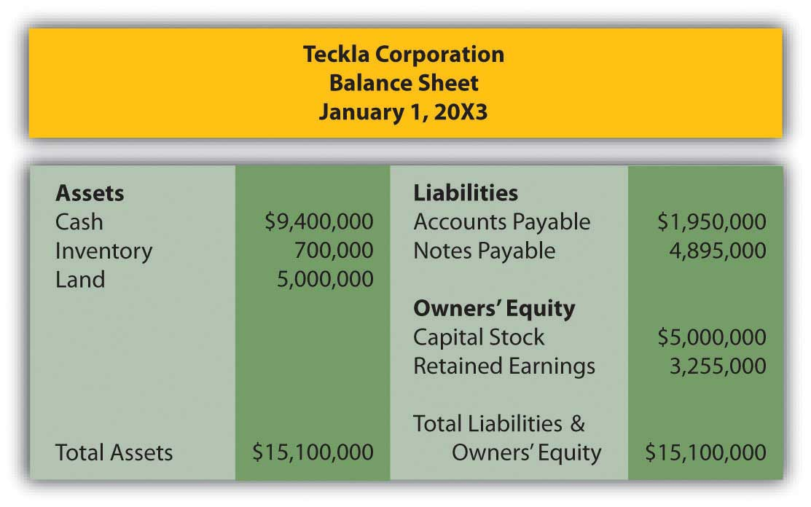
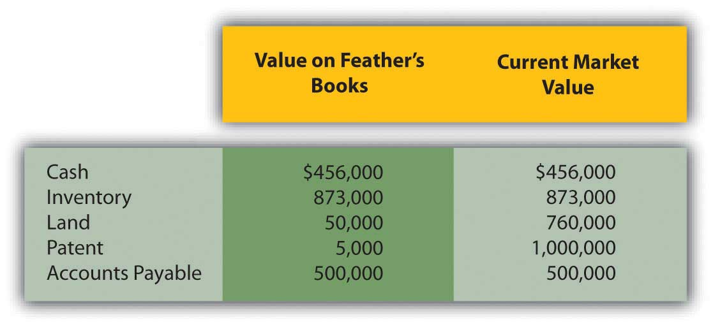
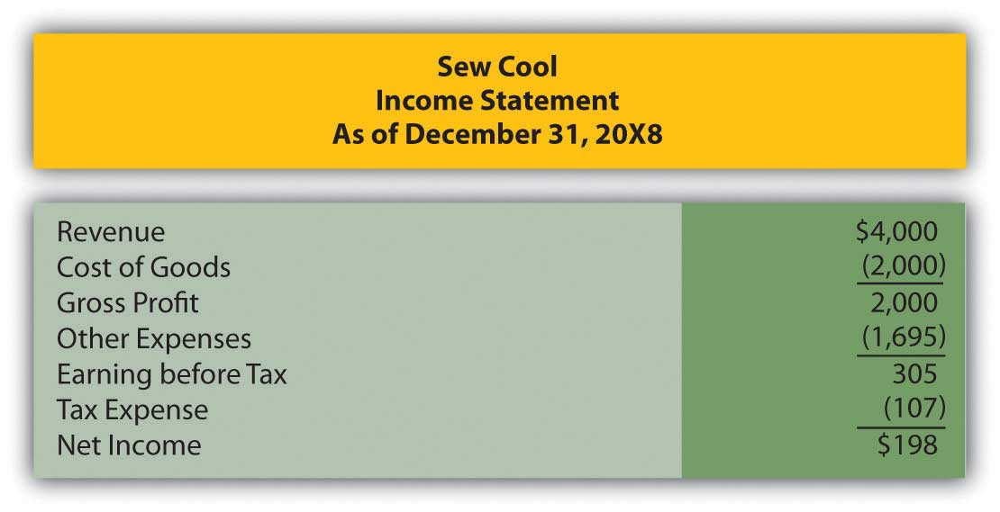
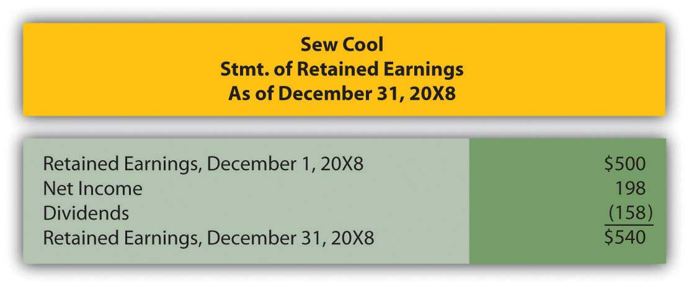
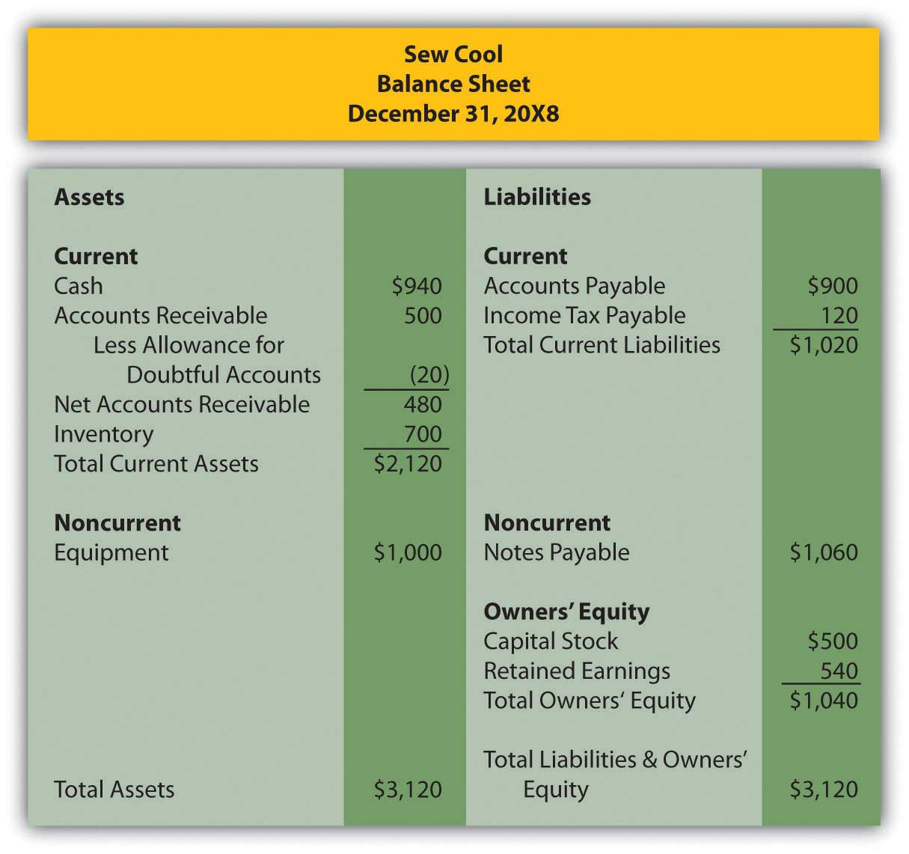
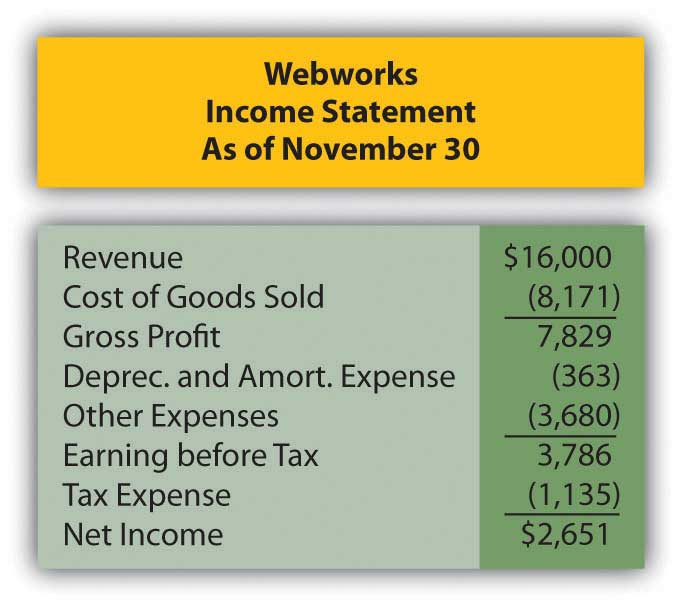
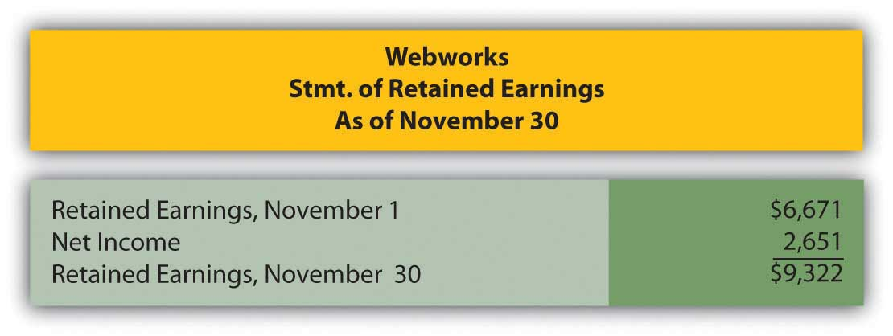
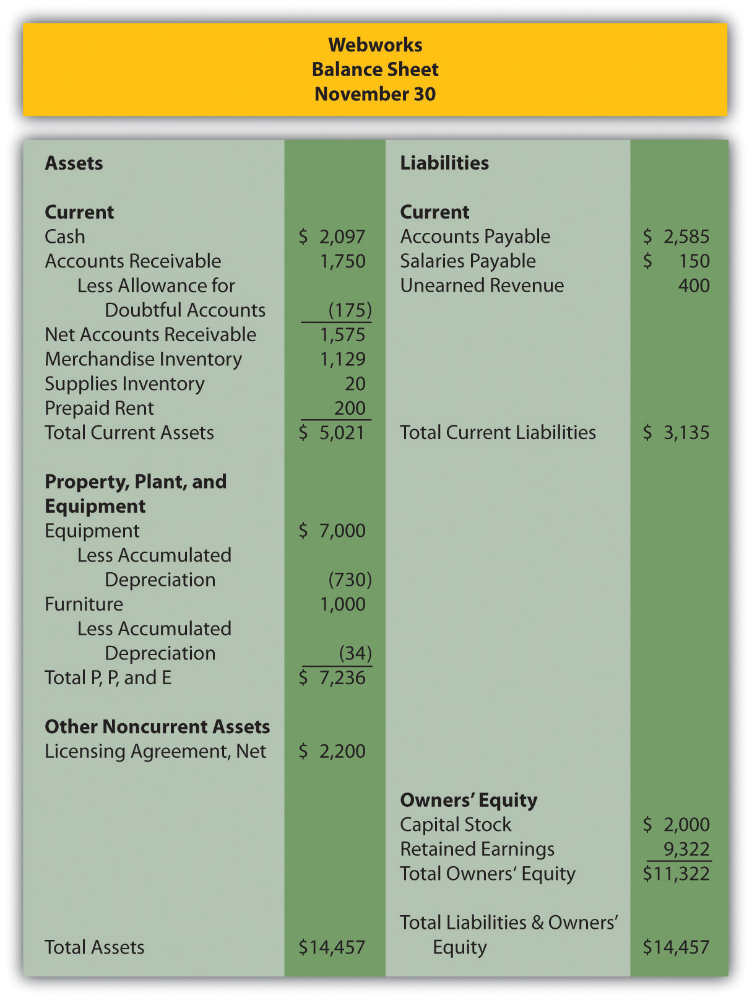

On March 5, Maxwell Corporation purchased seventy shares of Tyrone Company for $30 per share, planning to hold the investment for a short time. On June 30, Maxwell prepares its quarterly financial statements. On that date, Tyrone is selling for $32 per share. What is the unrealized gain Maxwell will report and where should it be reported?
Which of the following is not a reason investments in trading securities are shown at their fair value on the balance sheet?
Jackson Corporation purchased 150 shares of Riley Corporation for $46 per share. The investment is available for sale. On 12/31/X5, Riley’s stock is selling for $43 per share. Jackson’s net income for the year was $235,000. What was Jackson’s comprehensive income?
Anton Company owns 45 percent of Charlotte Corporation and exerts significant influence over it. This investment should be shown as:
Tried Company began the year with $450,000 in total assets and ended the year with $530,000 in total assets. Sales for the year were $560,000 and net income for the year was $46,000. What was Tried Company’s return on assets for the year?
Hydro Company and Aqua Corporation are in the same industry. During 20X9, Hydro had average total assets of $35,000 and sales of $47,800. Aqua had average total assets of $49,000 and sales of $56,900. Which of the following is true?
Lancaster Inc. purchases all the outstanding stock of Lucy Company for $4,500,000. The net assets of Lucy have a fair value of $2,900,000, including a patent with a book value of $4,700 and a fair value of $159,000. At what amount should the patent and any goodwill from this purchase be shown on consolidated financial statements on the date of purchase?
On 12/31/X2, Brenda Corporation purchased Kyle Inc. for $3,400,000. Kyle had one asset, a trademark, whose fair value ($45,000) exceeded its book value ($15,000) by $30,000. The trademark has a remaining useful life of five years. Goodwill was also recorded in this purchase in the amount of $146,000. Kyle continued to operate after the purchase, and now on 12/31/X3, Brenda is preparing consolidated statements for the year. Independent appraisers now believe Kyle’s trademark is worth $50,000. Brenda’s independent auditors believe that the goodwill has been impaired slightly and is now worth $120,000. At what amounts should the trademark and goodwill be shown on Brenda’s consolidated balance sheet on 12/31/X3?
Record the journal entry for each event below:
On March 1, Johnson Inc. purchased 500 shares of Thomas Company stock when Thomas’ stock was selling for $20 per share. Johnson plans to hold this stock for a short time and hopefully sell it for a gain.
On December 31, Johnson prepares its financial statements. Thomas’ stock is selling for $18 per share.
Record the journal entry for each event below:
On April 16, Yowza Inc. purchased 900 shares of Cool Company stock when Cool’s stock was selling for $15 per share. Yowza plans to hold this stock for more than a year.
On December 31, Yowza prepares its financial statements. Cool’s stock is selling for $20 per share.
Oregon Company, a paper products manufacturer, wishes to enter the Canadian market. The company purchased 30 percent of the outstanding stock of Canadian Paper Inc. on January 1 for $6,000,000. The CEO of Oregon will sit on the board of directors of Canadian, and other evidence of significant influence exists. At the date of purchase, the book value of Canadian’s net assets was $20,000,000.
On March 1, 20X8, Current Properties paid $1,000,000 for 25 percent of the shares of Sealy Enterprises. Current exerts significant influence over Sealy.
Teckla Corporation purchases all the outstanding stock of Feather Company on 1/1/X3 for $5,000,000. Teckla’s balance sheet on that date before the purchase looked like this:
Figure 12.19 Assets and Liabilities of Teckla
On 1/1/X3, Feather has the following assets and liabilities:
Figure 12.20 Assets and Liabilities of Feather
In several past chapters, we have met Heather Miller, who started her own business, Sew Cool. The financial statements for December are shown below. To calculate average total assets, assume that total assets on 6/1/20X8, when Sew Cool started business, were zero.
Figure 12.21 Sew Cool Financial Statements
Figure 12.22
Figure 12.23
Based on the financial statements determine the following:
This problem will carry through several chapters, building in difficulty. It allows students to continuously practice skills and knowledge learned in previous chapters.
In Chapter 11 "In a Set of Financial Statements, What Information Is Conveyed about Intangible Assets?", you prepared Webworks statements for November. They are included here as a starting point for December.
Figure 12.24 Webworks Financial Statements
Figure 12.25
Figure 12.26
The following events occur during December:
a. Webworks starts and completes nine more Web sites and bills clients for $5,000.
b. Webworks purchases supplies worth $130 on account.
c. At the beginning of December, Webworks had nine keyboards costing $111 each and ten flash drives costing $13 each. Webworks uses periodic FIFO to cost its inventory.
d. On account, Webworks purchases seventy keyboards for $113 each and one hundred flash drives for $15 each.
e. Webworks decides to invest a small amount of its excess cash in the stock market in the hopes of making a quick gain. Webworks purchases sixty shares of stock in XYZ Corporation for $5 per share in cash.
f. Webworks pays Nancy $750 for her work during the first three weeks of December.
g. Webworks sells sixty-five keyboards for $9,750 and ninety flash drives for $1,800 cash.
h. The Web site for the realtor started in November is completed.
i. Webworks collects $4,500 in accounts receivable.
j. Webworks pays off its salaries payable from November.
k. Webworks pays off $10,500 of its accounts payable.
l. XYZ Corporation pays Webworks a dividend of $40.
m. Webworks pays Leon a salary of $2,000.
n. Webworks pays taxes of $1,272 in cash.
Required:
A. Prepare journal entries for the above events.
B. Post the journal entries to T-accounts.
C. Prepare an unadjusted trial balance for Webworks for December.
D. Prepare adjusting entries for the following and post them to your T-accounts.
o. Webworks owes Nancy $200 for her work during the last week of December.
p. Leon’s parents let him know that Webworks owes $300 toward the electricity bill. Webworks will pay them in January.
q. Webworks determines that it has $60 worth of supplies remaining at the end of December.
r. Prepaid rent should be adjusted for December’s portion.
s. Webworks is continuing to accrue bad debts at 10 percent of accounts receivable.
t. Webworks continues to depreciate its equipment over four years and its furniture over five years, using the straight-line method.
u. The license agreement should continue to be amortized over its one-year life.
v. On December 31, XYZ stock is selling for $6 per share. Record any unrealized gain or loss.
w. Record cost of goods sold.
x. Near the end of December, a new flash drive appears on the market that makes the ones Webworks has been selling virtually obsolete. Leon believes that it might be able to sell the rest of its inventory (twenty flash drives) for $5 each.
E. Prepare an adjusted trial balance.
F. Prepare financial statements for December.